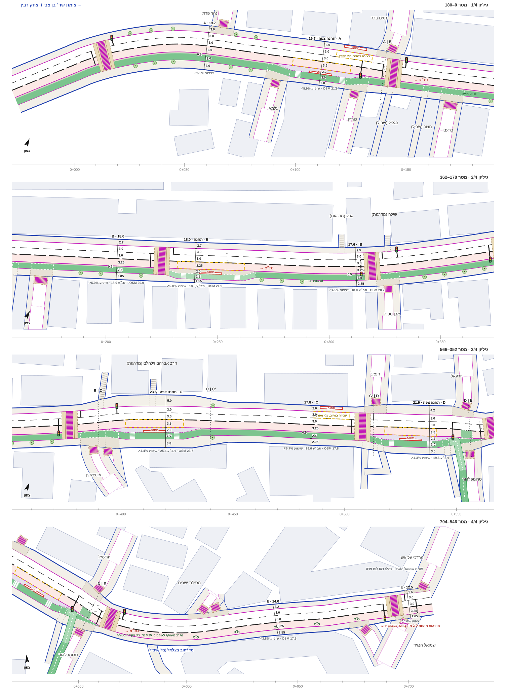
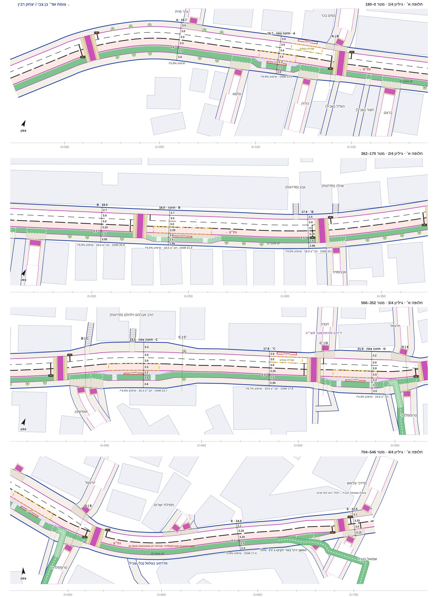
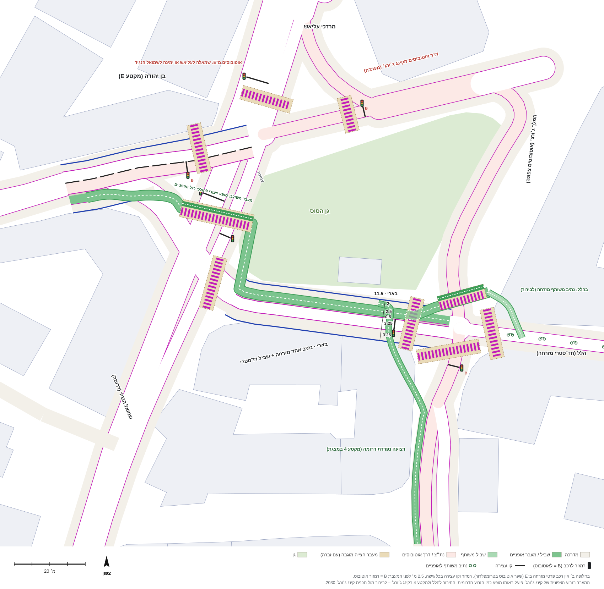
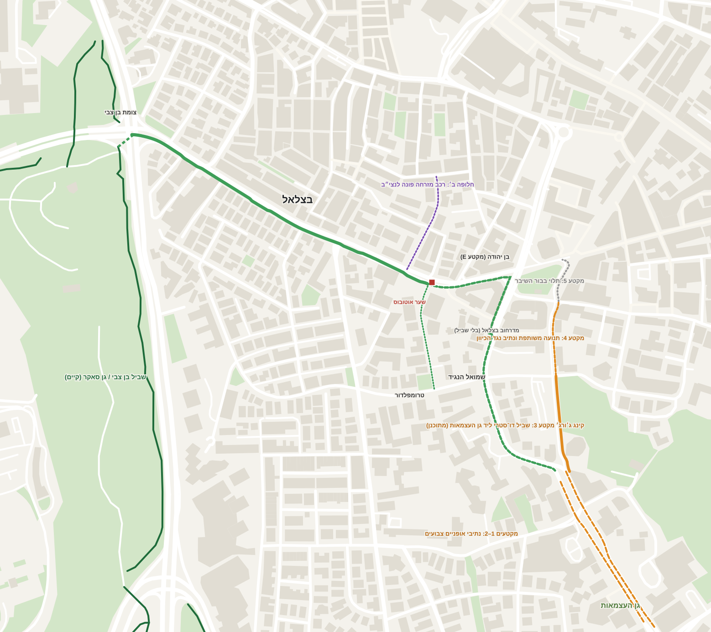
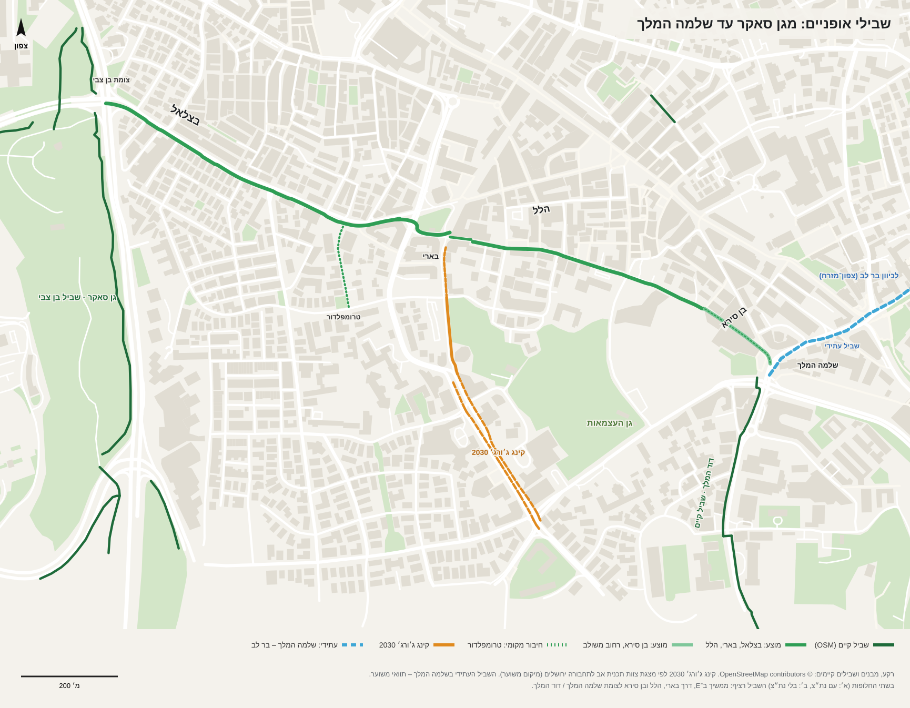
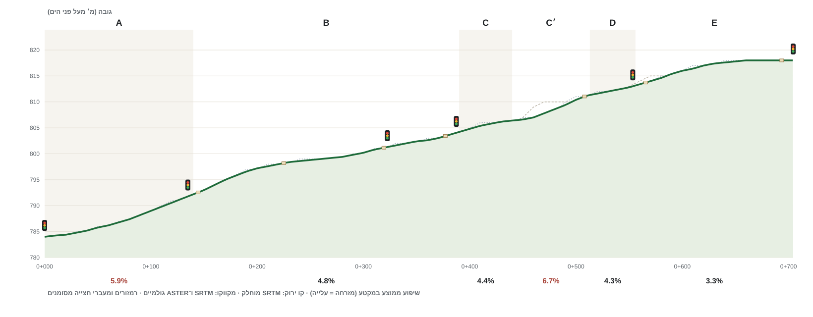
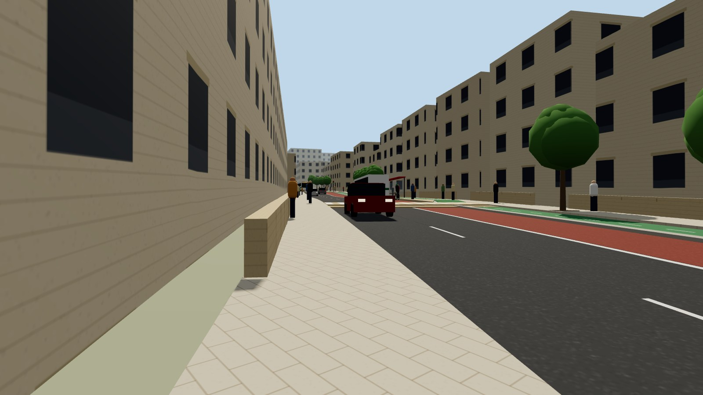
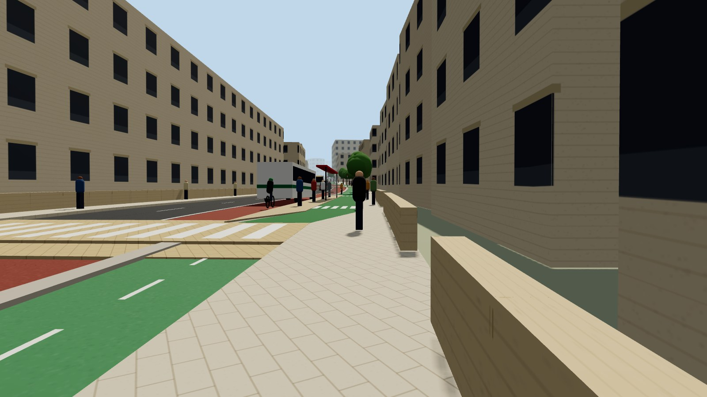

הצעה לרחוב בצלאל, מבן צבי עד שמואל הנגיד (704 מ׳). הרחוב מקבל נתיב רכב לכל כיוון ונת״צ לכיוון המרכז, שביל אופניים דו־סטרי בצד הדרומי, מדרכות רחבות ככל האפשר, ובלי חניה. התכנית משורטטת על הגיאומטריה האמיתית מ־OpenStreetMap, והרוחבים לפי קו הדרך בתב״ע.
השביל תמיד מאחורי התחנהבתחנות צפות האי בין הנת״צ לשביל. בתחנה הצרה ב־B השביל ממשיך מאחורי רצועת ההמתנה, משותף עם המדרכה.
חיץ עבירבין הנת״צ לשביל יש אבן שפה נמוכה, בלי עמודים. רוכב איטי בעלייה (כ־5%) יכול לעבור לנת״צ.
מעברים מוגבהיםבכל צומת מרומזר ובכל פה של רחוב צד, עם אוזניים שמצרות את פי רחובות הצד.
תחנות מערבה בנתיבלכיוון מערב אין נת״צ, והאוטובוס עוצר בנתיב, בלי מפרץ. מעבר החצייה ממוקם תמיד מאחורי האוטובוס.
סרטון: רכיבה לאורך השביל
מבט רוכב בעלייה, מבן צבי עד שמואל הנגיד (חלופה ב׳). הדמיה סכמטית: גובה המבנים משוער, והשטח לפי פרופיל הגבהים.
חתכים לפי מקטע
A · 0–140 מ׳ · בן צבי – הגלילB · 140–390 מ׳ · הגליל – אוסישקיןB׳ · 300–335 מ׳ · ליד אבן ספירC · 390–440 מ׳ · אוסישקין – וילהלםC׳ · 440–513 מ׳ · עד הנצי״בD · 513–556 מ׳ · הנצי״ב – טרומפלדורE · 556–704 מ׳ · בן יהודה (בסיס)E · חלופה ב׳ · 556–704 מ׳ · בלי נתיב רכב מזרחה
רוחב הרחוב: השוואת מקורות
מקטע
מדידה (תצ״א)
קווי מבנים (OSM)
קו דרך בתב״ע (Xplan)
בחתך
A
19.7
22.0
—
19.7
B
17.2
21.4
18.0
18.0
B׳
16.4
17.6
18.0
17.6
C
20.7
23.5
24–25.5
23.5
C׳
—
17.8
18.3–19.7
17.8
D
21.9
צד צפוני בלבד
צד צפוני בלבד
21.9
E
14.0 / 12.5
15.8
—
14.0 / 12.5
הרוחב בכל מקטע הוא הקטן מבין קו הדרך בתב״ע וקווי המבנים. היכן שאין תכנית מקוונת, הרוחב לפי המדידה. קווי המבנים ב־OSM כוללים חצרות קדמיות, שהן קרקע פרטית.
תכנית: חלופת בסיס

תכנית: חלופה ב׳ (בלי נתיב רכב מזרחה ב־E)
במקטע E (בן יהודה, 14 מ׳) יש שער אוטובוס בצומת טרומפלדור: מזרחה ממשיכים רק אוטובוסים ואופניים. רכב פרטי מזרחה פונה לנצי״ב. הנתיב מערבה נשאר, גם לאוטובוסים, והשביל ממשיך דרך בארי לקינג ג׳ורג׳ ולהלל.

פרט: מצומת שמואל הנגיד דרך בארי לקינג ג׳ורג׳ והלל
השביל חוצה את שמואל הנגיד במעבר מוגבה משולב, עם מופע ייעודי להולכי רגל ולאופניים, וממשיך בבארי לאורך גן הסוס. בבארי נשאר נתיב רכב אחד מזרחה במקום שניים, ונוספים שביל דו־סטרי, חיץ ומדרכות (11.5 מ׳). בצומת קינג ג׳ורג׳/הלל מעבר מוגבה חדש מוביל להלל מזרחה, ורצועה נפרדת ממשיכה דרומה לצד הנת״צ.

חיבור לרשת האופניים

במערב: השביל הקיים בבן צבי/גן סאקר. במזרח (חלופה ב׳): דרך בארי לצומת קינג ג׳ורג׳/הלל, ומשם מזרחה בהלל ודרומה בקינג ג׳ורג׳ (תכנית קינג ג׳ורג׳ 2030).
מפת שבילי האופניים באזור

השבילים הקיימים, שביל בצלאל המוצע וההמשך מזרחה, תכנית קינג ג׳ורג׳ 2030 והשביל העתידי בשלמה המלך לכיוון בר לב. ההמשך בהלל ובבן סירא עדיין בתכנון, וזה רק תוואי.
פרופיל אורך

עלייה של כ־34 מ׳ ממערב למזרח, בשיפוע ממוצע של כ־4.8% (SRTM ברזולוציה של 30 מ׳, מוחלק, ולכן משוער).
הדמיות

מקטע B, מבט מזרחה מהמדרכה הצפונית

התחנה ב־B: השביל עובר מאחורי רצועת ההמתנה, משותף עם המדרכה